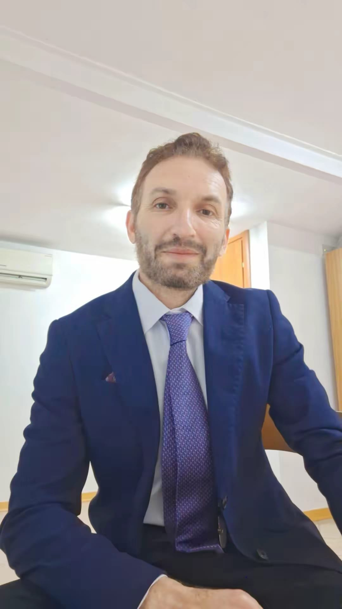

PhD in Interactive & Cognitive Environments | AI Researcher | LiDAR, Autonomous Systems, Computer Vision
Download CV Google Scholar GitHub ProjectsI am a researcher specializing in Artificial Intelligence, Machine Learning, and Computer Vision with a strong focus on LiDAR-based perception and autonomous vehicle localization. I obtained my PhD in Interactive and Cognitive Environments through a joint doctoral program between the University of Genoa (Italy) and Universidad Carlos III de Madrid (Spain).
My research focuses on probabilistic models, LiDAR point-cloud processing, object tracking, and ego-vehicle localization in autonomous driving environments. I have more than five years of experience in research, teaching, and software development, with expertise in Dynamic Bayesian Networks, generative modeling, and explainable AI.